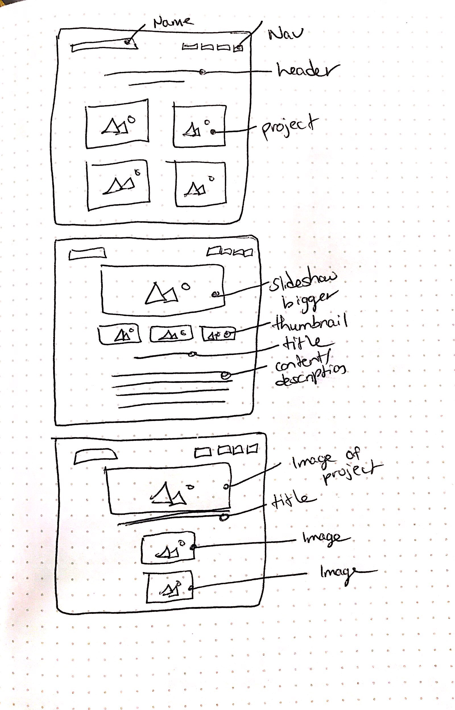

The only code that I used that isn’t mine is “description Tasty CSS-animated hamburgers” by Jonathan Suh. This can be found at https://jonsuh.com/hamburgers/. I used it for the hamburger menu because I enjoyed the animation. While I used the code for the styling, the function to activate the menu is my own.I also used Gregory Schier's code pen code in order to have the typing carousel effect on the home page.
The reason I chose the fonts that I did was because they are super legible and accessible. I did research on creative fonts that were still legible, and Lato was one that was mentioned. I also wanted this project to remain consistent with my existing portfolio, which is another reason I chose Lato. In terms of color, I wanted a very minimal approach. I added blue to the homepage to emphasize my different design titles, but wanted everything else black and white because I liked the aesthetic and it is more sophisticated that way
I made a LOT of corrections for this revision of the project. I noticed a lot of my pages weren't as responsive and could have been done better, so I fixed the width of the text boxes so that on mobile, they spanned across the screen. Some pages also didn't have consistent image sizes or margins, so I went and fixed those issues as well. I also fixed the resume printing issue so now you see content on the page when you hit the print button. Moreover, I added more content in each individual project page. The things that I added were the changing titles on the home screen, the added content mentioned above, and I added a slideshow function on the 3D Renders page so that you can see different 3D projects I've done. You can definitely see MAJOR improvements from my last project version.
Here are a list of sources that I used for my project:
https://codepen.io/gschier/pen/jkivt
https://jonsuh.com/hamburgers/
Below, you can find updated sketches for this particular project layout
